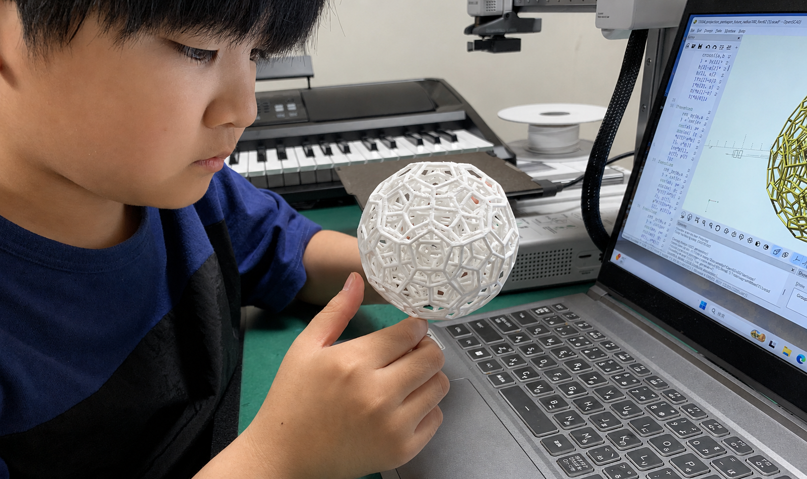
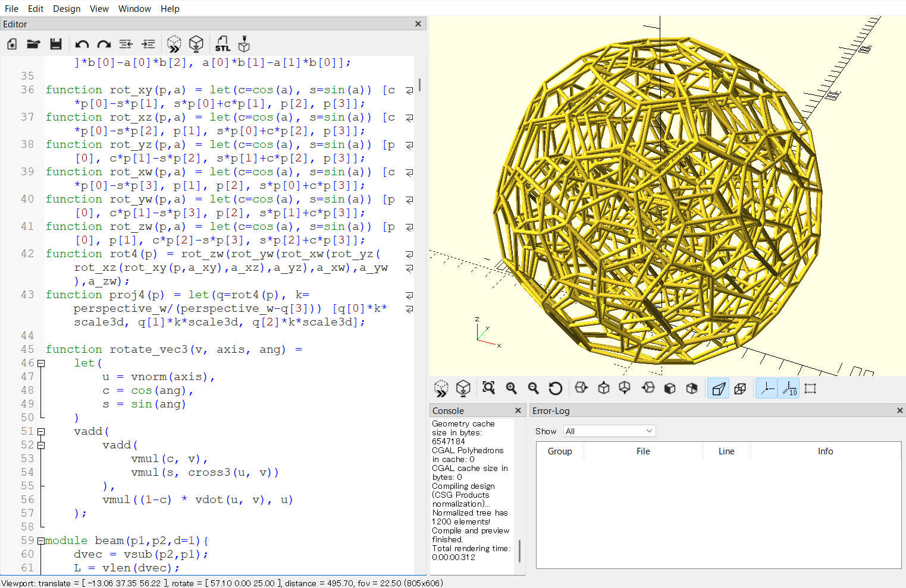
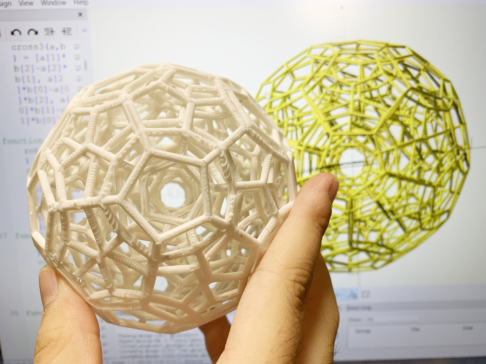
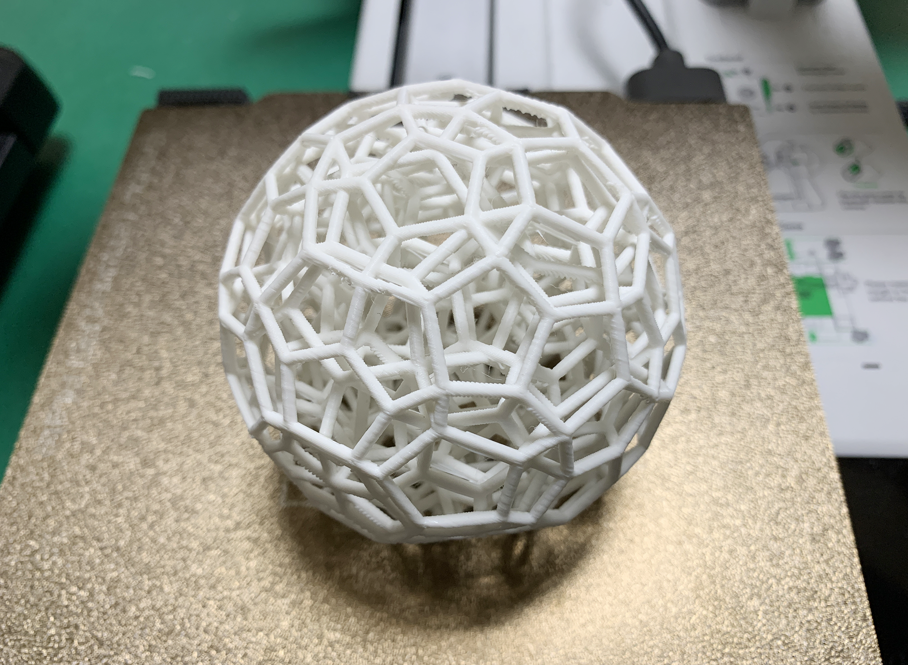
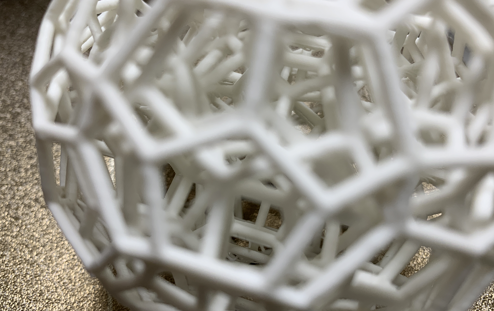

May 17, 2026
3D Projection Wireframe Model of the 120-cell
Visualizing a Four-Dimensional Regular Polytope with OpenSCAD and 3D Printing
Overview:
This work is a 3D-printed wireframe model of the 120-cell, a four-dimensional regular polytope, projected into three-dimensional space.
The 120-cell is a four-dimensional regular polytope whose cells are regular dodecahedra.
In this project, vertices were generated from coordinate families related to the H4 polytope structure.
After expanding the coordinate patterns and removing duplicates, the model contains 600 vertices.
The edges were then reconstructed by calculating four-dimensional distances between vertex pairs and extracting only the pairs that matched the edge-length condition.
The resulting four-dimensional structure was then projected into three-dimensional space and modeled in OpenSCAD as a wireframe suitable for 3D printing.
Many parts of the finished model appear to form pentagonal shapes, but these are not simply regular pentagons arranged in three-dimensional space.
Rather, they include distortions and overlaps caused by projecting a four-dimensional structure into three-dimensional space.
Therefore, this model is not a direct three-dimensional assembly of regular dodecahedra, but a physical object that makes it possible to observe
a three-dimensional projection of a four-dimensional regular polytope.
Note: All content on this page is originally explained by Reiji in Japanese. The English version is translated by AI and structured by a parent, with Reiji's final approval.
Reiji's Words and Ideas
- This work is a wireframe model of the 120-cell, a four-dimensional regular polytope, projected into three-dimensional space.
- Before working with the full 120-cell, I also examined the structure of the regular dodecahedron in three dimensions. Since a regular dodecahedron has regular pentagonal faces, distances involving the golden ratio \(\varphi\) appear in its diagonals and vertex relationships. For example, larger pentagonal structures can involve relationships such as \(\varphi\), \(\varphi^2\), \(\varphi\sqrt{2}\), or \(\varphi\sqrt{3}\), depending on which vertices are compared.
- However, when moving from the three-dimensional dodecahedron to the four-dimensional 120-cell, the number of possible diagonals and distance relationships increases dramatically. Because of this, I needed to use four-dimensional distance calculations to determine which pairs of vertices should actually be connected as edges.
- The 120-cell is a four-dimensional regular polytope whose cells are regular dodecahedra. In the construction process, I first generated vertices from known coordinate families, and then reconstructed the edges by judging the distances between pairs of vertices. After that, I projected the four-dimensional structure into three-dimensional space and modeled it in OpenSCAD as a wireframe that could be 3D printed.
- The vertices of the 120-cell were generated from coordinate families related to the H4 polytope structure. There are multiple coordinate patterns, and when all patterns are expanded and duplicates are removed, the model has 600 vertices.
- After generating the 600 vertices, I did not connect every vertex to every other vertex unconditionally. Instead, I calculated the four-dimensional distance between each pair of vertices and extracted only the pairs whose distance matched the edge-length condition. Since manually performing the pattern extraction, duplicate detection, and four-dimensional distance checks would have been extremely difficult, I also used AI as a computational assistant.
- The pentagon-like parts visible in the projected model are not regular pentagons placed directly next to one another. They are shapes that include distortion as a result of projecting a four-dimensional structure into three-dimensional space.
- The regular dodecahedron is one of the five Platonic solids. A Platonic solid is a convex polyhedron whose faces are all congruent regular polygons, and whose vertex structure is the same at every vertex. The five Platonic solids are the regular tetrahedron, cube, regular octahedron, regular dodecahedron, and regular icosahedron.
- In this project, I worked with the 120-cell, which has regular dodecahedra as its cells. The coordinates were generated from known coordinate families, the edges were reconstructed using distance judgments, and the structure was then projected into three-dimensional space for visualization. Because of this projection, the pentagon-like parts visible in the model contain distortion.
- The most difficult part of the project was removing the supports after 3D printing. The printing itself took about 4 hours, but because the model has a very fine wireframe structure extending all the way into the interior, removing the support material was much more difficult. Removing the supports alone took about 12 hours.
Images

Observing the Completed 120-cell Projection Model by Hand
This is the 3D-printed wireframe model of the 120-cell projected into three-dimensional space. By holding and rotating the model, one can observe the complex overlaps and depth produced by the projection of a four-dimensional structure into three dimensions.

The 120-cell Projection Model Constructed in OpenSCAD
This image shows the 120-cell projection model generated in OpenSCAD. Vertices were generated from four-dimensional coordinates, and edges reconstructed by distance judgment are displayed as a wireframe. This on-screen model served as the source data for the actual 3D print.

Comparison Between the 3D-printed Model and the OpenSCAD Rendering
This photo compares the OpenSCAD rendering on the screen with the actual 3D-printed model. It shows that the thin wireframe and internal structure were reproduced without being significantly crushed in the printed output.

Whiteboard Notes Organizing the Properties of Polytopes
These whiteboard notes organize relationships among two-dimensional regular polygons, three-dimensional Platonic solids, and four-dimensional regular polytopes. The notes compare numbers of faces, cells, and angle relationships while considering the structure of the 120-cell.

Notes on Pentagonal Distance Relationships in a Regular Dodecahedron
This image shows notes used to think about the three-dimensional regular dodecahedron, whose faces are regular pentagons. The whiteboard diagram and the small numbered physical model were used to examine how vertices, diagonals, and pentagonal structures relate to one another. Since the 120-cell has regular dodecahedra as its cells, understanding the distance relationships that appear in the dodecahedron, including those involving the golden ratio \(\varphi\), helped provide a basis for thinking about the more complex four-dimensional structure.

Coordinate Calculation Notes for the 5-cell and 8-cell
Since the 120-cell has a very large number of vertices, it is difficult to write out the whole structure by hand. These notes record the process of manually thinking through the coordinates of the 5-cell and 8-cell as comparison examples. They show an attempt to understand four-dimensional figures by treating them as coordinate-based objects and then projecting them.

The 120-cell Projection Model After Support Removal
This is the 120-cell projection model after 3D printing and support removal. The print itself took about 4 hours, but thin wireframe structures extend not only over the exterior but also throughout the interior. Because the supports were intertwined with the fine internal wireframe, the support-removal process alone took about 12 hours.

Close-up View of the Internal Structure
This close-up photograph shows the interior of the completed model. Multiple layers of wireframe structure overlap, revealing the complex internal structure that appears when a four-dimensional regular polytope is projected into three-dimensional space.
| Output |
120-cell 3D Projection Wireframe Model A projected model of a four-dimensional regular polytope generated in OpenSCAD and fabricated with a 3D printer. |
|---|---|
| Tools Used |
OpenSCAD / 3D Printer Four-dimensional coordinate generation, edge reconstruction by distance judgment, three-dimensional projection, wireframe modeling, and 3D printing. |
| Subject |
120-cell A four-dimensional regular polytope whose cells are regular dodecahedra. |
AI Assistant’s Notes and Inferences
The important point of this work is not simply that a complex spherical-looking 3D model was made. Rather, its significance lies in the fact that a four-dimensional regular polytope was treated as coordinate data and transformed into a mathematically structured object that could be fabricated by 3D printing.
- The 120-cell is a four-dimensional regular polytope whose cells are regular dodecahedra, making it a difficult object to understand intuitively. Although the finished model may look like a decorative geometric object at first glance, it actually involves the mathematical process of projecting a higher-dimensional figure into a lower-dimensional space.
- The production process appears to include several distinct stages: generating four-dimensional coordinates, judging distances between vertices to determine edges, projecting from four dimensions into three dimensions, converting the result into a wireframe in OpenSCAD, adjusting thicknesses and connections for 3D printing, printing the model, and finally removing the supports.
- The use of AI in this project appears to have functioned mainly as computational assistance rather than as a replacement for the mathematical idea itself. Reiji identified the target structure, understood that the 120-cell should be generated from coordinate families, and recognized that edge extraction required four-dimensional distance checks. AI was then used to help with tasks that are impractical to perform manually, such as pattern expansion, duplicate removal, and repeated distance calculations.
- Reiji’s explanation that the pentagon-like parts are not simply regular pentagons, but include distortion caused by projection, is especially important. It shows that he distinguishes between the visible projected form and the original higher-dimensional structure.
- The whiteboard notes suggest that he was connecting multiple ideas, including regular polygons, regular dodecahedra, Platonic solids, the 5-cell, the 8-cell, the 120-cell, cell counts, dihedral angles, coordinate representations, and projection. The additional notes on the regular dodecahedron are especially useful because they show how he connected the 120-cell back to its three-dimensional cell structure and to pentagonal distance relationships involving the golden ratio.
- For a project made at age 10, it is particularly notable that it crosses several domains: mathematics, programming, 3D CAD, and 3D printing. The value of the work lies not only in the beauty of the finished object, but also in the process of generating a structure from coordinates, projecting it, making it work as a physical model, and completing the demanding post-processing required after printing. In this case, the print itself took about 4 hours, while support removal alone took about 12 hours, showing how demanding the physical fabrication stage was.
In summary, this work does not merely treat a four-dimensional regular polytope as an abstract mathematical object. It transforms that object into a physical model that can be held and observed. The central achievement of this project is the way it connects higher-dimensional geometry, visualization, modeling, and fabrication into a single workflow.